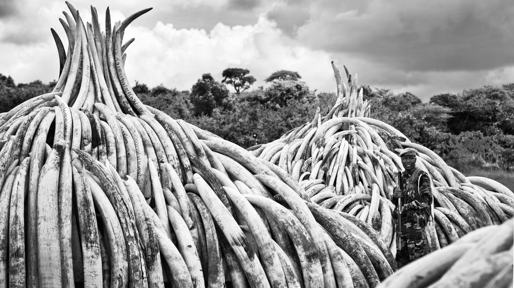
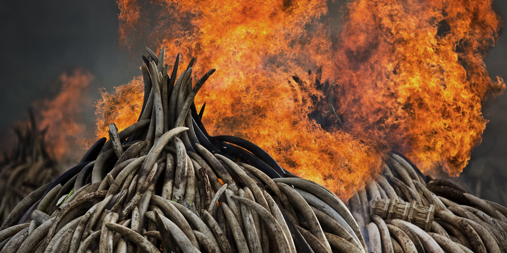

May, 2016
2016 Kenya Ivory Burn
Press Secretary at Animat Habitat™
Nairobi — In April, the presidents of Gabon and Kenya set fire to 105 tons of elephant ivory and more than 1 ton of rhino horn (believed to be the largest stockpile ever destroyed) in a dramatic statement against the trade in ivory and products from endangered species. They say the pyres billowed thick plumes of white smoke over yellow flames that consumed the ivory. This was incited by about twenty thousand liters of jet fuel and oxygen. It was not known how long the burn would last because the burning of such a quantity was unprecedented. The stacks of tusks represented more than six-thousand seven-hundred (6,700) elephants killed for their ivory and three-hundred and forty (340) rhinos killed for their horns, plus endangered animal hides and skins and so on, sandalwood seizures and sacks full of Prunus Africana bark.

KWS ranger stands guard in Nairobi National Park, 2016
By setting the pyres ablaze the trophies have been placed beyond economic value. This has demonstrated to the world at large that the cache was destroyed and not pilfered back into the black market. And so it has reaffirmed a commitment to protect the irreplaceable wildlife in Kenya. Kenyatta, who was joined by other African leaders and foreign officials, has demanded a total ban on the ivory trade to protect the future of wild elephants on the continent.
“A time has come when we must take a stand and the stand is clear. […] Kenya is making a statement that for us ivory is worthless unless it is on our elephants. This will send an absolutely clear message that the trade in ivory must come to an end and our elephants must be protected. I trust that the world will join us to end the horrible suffering of our herds and save our elephants for future generations.” — Uhuru Kenyatta. (2016) Presidential address. Nairobi, Kenya.

Kenya Ivory Burn, 2016
Kenya Wildlife Service (KWS) director general Kitili Mbathi said, “We do not believe there is any intrinsic value in ivory, and therefore we are going to burn all our stockpiles and demonstrate to the world that ivory is only valuable on elephants”. KWS chairman and renowned paleoanthropologist and conservationist Richard Leakey said the burning of the ivory should encourage African countries to support a ban in ivory trade: "We will burn ivory and we hope every country in the globe will support Kenya and say never again should we trade ivory". Kenyatta said that Kenya will push for the total ban on trade in ivory at the 17th meeting of CITES, to be held in South Africa later this year.
“Recognizing that wild fauna and flora in their many beautiful and varied forms are an irreplaceable part of the natural systems of the earth which must be protected for this and the generations to come.” — Convention on International Trade in Endangered Species of Wild Fauna and Flora (March 1973) CITES. Preamble.
Kenya decided to destroy the ivory instead of selling it for an estimated one-hundred and fifty (150) million U.S. dollars. The Kenyan ivory pyres represented about five percent of global ivory stores. Some critics suggested that the money raised from the ivory sales could be used to develop Kenya and protect wildlife. Some said destroying so much of a rare commodity could increase its value and encourage more poaching rather than less. Others said that the burning would not end the killing of elephants because international gangs take advantage of Kenya's porous borders and corruption to continue the illegal trade, with the main trafficking route to Asia being through the Kenyan port of Mombasa. But Kenyatta wants to make the point very clear that ivory should not have any commercial value. Before igniting the first pyre, Kenyatta made the statement: “The height of the pile of ivory before us marks the strength of our resolve. […] No-one, and I repeat no-one, has any business in trading in ivory, for this trade means death of our elephants and death of our natural heritage.”